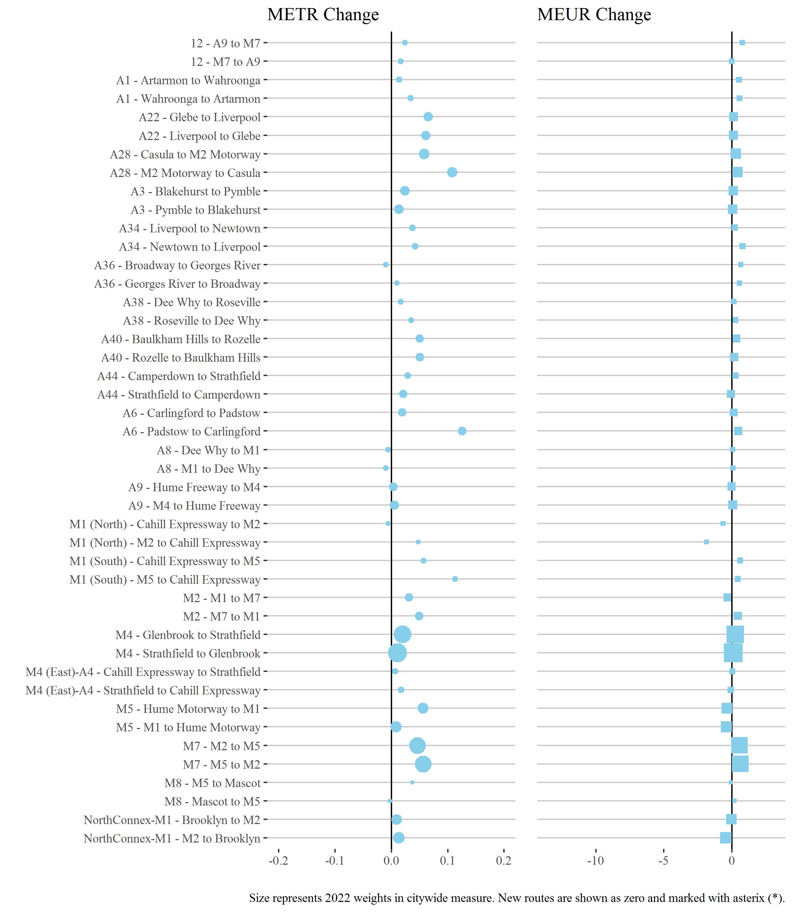
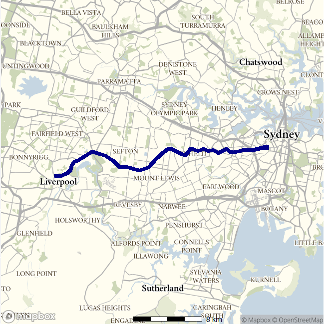

Congestion Report 2022
Congestion Report 2022Sydney
Note: Shape size denotes 2022 weights in city-wide measures.
With few exceptions travel time congestion increased on Sydney routes, particularly southbound on the A28 and Northbound on the A6. The city-wide increase in travel time congestion was particularly influenced by increases travel times recorded on the M7 and M4.
There was generally little change in congestion uncertainty across Sydney in 2022, with city-wide increases also heavily influenced by the highly weighted M7 and M4 routes.
Ratio of median travel time to best (shortest) travel time for each route.
Route 12 - A9 to M7 / M7 to A9
This route follows surface routes in South Western Sydney from the A9 at Narellan to Casula where the Hume Motorway branches into the M5 and M7. It serves areas adjacent to the Western Sydney Airport currently under construction and some light industrial areas. It runs predominantly along Camden Valley Way.
| Direction | Shortest median travel time | Longest median travel time | METR | Smallest Uncertainty Range | Longest Uncertainty Range | MEUR | Route distance |
|---|---|---|---|---|---|---|---|
| A9 to M7 | 00:15:27 | 00:20:13 | 1.118 | 00:03:38 | 00:17:28 | 2.314 | 17.1 |
| M7 to A9 | 00:15:56 | 00:20:13 | 1.128 | 00:05:30 | 00:17:46 | 1.749 | 17.1 |
The best median travel times and lowest uncertainty for journeys from the A9 to the M7 were at 2am with a median travel time of around 15 minutes and an interquartile range of around 4 minutes. The longest median travel times and greatest uncertainty were at 8am with a median of 20 minutes and an interquartile range of around 17 minutes.
The best median travel times and least uncertainty for journeys from the M7 to the A9 were at 3am, with a median travel time of around 16 minutes and an interquartile range of 5.5 minutes. The longest median travel times and greatest uncertainty were at 4pm with a median of 20 minutes and an interquartile range of around 18 minutes.
Source: BITRE estimates
Shortest and longest route travel times only available for 2021 and 2022 for this route.
Source: BITRE estimates
A1 - Artarmon to Wahroonga / Wahroonga to Artarmon
This route follows the Pacific Highway from the Gore Hill Expressway at Artarmon and the M1 Motorway at Wahroonga. It, along with NorthConnex, is one of two routes connecting the orbital road network to the Pacific Motorway (M1) and the north of the state. It also services most of the Upper North Shore of Sydney.
| Direction | Shortest median travel time | Longest median travel time | METR | Smallest Uncertainty Range | Longest Uncertainty Range | MEUR | Route distance |
|---|---|---|---|---|---|---|---|
| Artarmon to Wahroonga | 00:15:31 | 00:22:55 | 1.224 | 00:04:05 | 00:18:21 | 2.638 | 13.5 |
| Wahroonga to Artarmon | 00:15:40 | 00:22:29 | 1.169 | 00:04:42 | 00:17:38 | 2.141 | 13.5 |
The best travel times and lowest uncertainty travelling from Artarmon to Wahroonga were at 1am and midnight with a median travel time of around 16 minutes and an interquartile range of 4 minutes. The longest median travel times were around 23 minutes at 8am and the greatest uncertainty were at 4pm with an interquartile range of 18 minutes.
The best median travel times and lowest uncertainty for journeys from Wahroonga to Artarmon were at 11pm with a median travel time of 16 minutes and an interquartile range of approximately 5 minutes. The longest median travel times and greatest uncertainty were at 8am with a median of around 22 minutes and an interquartile range of 18 minutes.
Shortest and longest route travel times only available for 2021 and 2022 for this route.
Source: BITRE estimates
A22 - Glebe to Liverpool / Liverpool to Glebe
This route follows surface roads between the inner city and the southwest of Sydney via Ashfield and important logistics sites around Chullora. It is known by various names, including Parramatta Road, Liverpool Road and also as the Hume Highway for most of its length.

| Direction | Shortest median travel time | Longest median travel time | METR | Smallest Uncertainty Range | Longest Uncertainty Range | MEUR | Route distance |
|---|---|---|---|---|---|---|---|
| Glebe to Liverpool | 00:37:17 | 00:50:31 | 1.153 | 00:21:21 | 00:44:58 | 1.398 | 29.2 |
| Liverpool to Glebe | 00:36:47 | 00:48:35 | 1.164 | 00:20:30 | 00:40:53 | 1.436 | 29.3 |
The best median travel times for journeys from Glebe to Liverpool were 37 minutes at 3am and the lowest uncertainty was at 3am with an interquartile range of around 21 minutes. The longest median travel times were around 51 minutes at 5pm and the greatest uncertainty was at 4pm with an interquartile range of 45 minutes.
The best travel times and lowest uncertainty travelling from Liverpool to Glebe were at 4am and 5am with a median travel time of 37 minutes and an interquartile range of approximately 20 minutes. The longest median travel times and greatest uncertainty were at 5pm with a median of around 49 minutes and an interquartile range of 41 minutes.
A28 - Casula to M2 Motorway / M2 Motorway to Casula
This surface route traverses much of Western Sydney, from the intersection of the M2 and Pennant Hills Road to the intersection of the Hume Motorway and Camden Valley Way. It passes Wentworthville, Fairfield West, Liverpool and Casula and crosses the A44, M4 and M5 routes.
| Direction | Shortest median travel time | Longest median travel time | METR | Smallest Uncertainty Range | Longest Uncertainty Range | MEUR | Route distance |
|---|---|---|---|---|---|---|---|
| Casula to M2 Motorway | 00:35:59 | 00:49:26 | 1.165 | 00:14:54 | 00:44:52 | 1.829 | 32.8 |
| M2 Motorway to Casula | 00:34:43 | 00:51:29 | 1.181 | 00:13:14 | 00:48:30 | 1.885 | 32.9 |
The best median travel times for journeys from Casula to M2 Motorway were 36 minutes at 1am and the lowest uncertainty was at 1am with an interquartile range of 15 minutes. The longest median travel times and greatest uncertainty were at 5pm with a median of around 49 minutes and an interquartile range of just under 45 minutes.
The best median travel times for journeys from M2 Motorway to Casula were around 35 minutes at midnight and the lowest uncertainty was at midnight with an interquartile range of 13 minutes. The longest median travel times were at 5pm with a median of around 51 minutes and the greatest uncertainty at 4pm with an interquartile range of approximately 48 minutes.
A3 - Blakehurst to Pymble / Pymble to Blakehurst
This route traverses Sydney from the intersection of Ryde Road and the Pacific Highway at Pymble to the Princes Highway at Blakehurst. It passes through Ryde, Strathfield, Roselands and Hurstville along its extent. It intersects with a number of other routes in this report including the M2, M4 and M5 motorways and the A34, A22 and A40.
| Direction | Shortest median travel time | Longest median travel time | METR | Smallest Uncertainty Range | Longest Uncertainty Range | MEUR | Route distance |
|---|---|---|---|---|---|---|---|
| Blakehurst to Pymble | 00:36:24 | 00:47:09 | 1.118 | 00:15:37 | 00:34:22 | 1.544 | 30.5 |
| Pymble to Blakehurst | 00:37:20 | 00:52:03 | 1.136 | 00:18:10 | 00:43:42 | 1.473 | 30.8 |
The best median travel times and least uncertainty for journeys from Blakehurst to Pymble were at 5am with a median travel time of approximately 36 minutes and an interquartile range of just under 16 minutes. The longest median travel times were at 2am with a median of 47 minutes and the greatest uncertainty at 8am with an interquartile range of around 34 minutes.
The best median travel times for journeys from Pymble to Blakehurst were 37 minutes at 6am and the lowest uncertainty was at 6am with an interquartile range of 18 minutes. The longest median travel times were at 3am with a median of 52 minutes and the greatest uncertainty at 5pm with an interquartile range of around 44 minutes.
A34 - Liverpool to Newtown / Newtown to Liverpool
This route follows a path almost parallel to the A22, but more southerly, passing through Marrickville, Punchbowl and Milperra. It is known by various names, including Canterbury Road and Milperra Road along its length.
| Direction | Shortest median travel time | Longest median travel time | METR | Smallest Uncertainty Range | Longest Uncertainty Range | MEUR | Route distance |
|---|---|---|---|---|---|---|---|
| Liverpool to Newtown | 00:31:32 | 00:44:36 | 1.221 | 00:14:42 | 00:47:39 | 2.042 | 26.1 |
| Newtown to Liverpool | 00:30:59 | 00:46:12 | 1.265 | 00:11:20 | 00:52:58 | 2.746 | 26.7 |
The best median travel times and least uncertainty for journeys from Liverpool to Newtown were at 4am with a median travel time of around 32 minutes and an interquartile range of just under 15 minutes. The longest median travel times and greatest uncertainty were at 3pm with a median of around 45 minutes and an interquartile range of just under 48 minutes.
The best median travel times for journeys from Newtown to Liverpool were approximately 31 minutes at 3am and the lowest uncertainty was at 3am with an interquartile range of about 11 minutes. The longest median travel times were at 4pm with a median of 46 minutes and the greatest uncertainty at 5pm with an interquartile range of 53 minutes.
A36 - Broadway to Georges River / Georges River to Broadway
This route travels south from the inner city at Broadway (Glebe), skirting industrial areas at Alexandria and passing through the St George region before meeting the A3 at Blakehurst. For most of its length it is known as the Princes Highway.
| Direction | Shortest median travel time | Longest median travel time | METR | Smallest Uncertainty Range | Longest Uncertainty Range | MEUR | Route distance |
|---|---|---|---|---|---|---|---|
| Broadway to Georges River | 00:19:25 | 00:30:30 | 1.305 | 00:05:58 | 00:24:50 | 2.755 | 16.5 |
| Georges River to Broadway | 00:20:11 | 00:32:36 | 1.352 | 00:06:52 | 00:28:51 | 2.700 | 16.5 |
The best median travel times for journeys from Broadway to Georges River were approximately 19 minutes at 4am and the lowest uncertainty was at 4am with an interquartile range of 6 minutes. The longest median travel times and greatest uncertainty were at 4pm with a median of around 30 minutes and an interquartile range of just under 25 minutes.
The best travel times and lowest uncertainty travelling from Georges River to Broadway were at 4am and 3am with a median travel time of 20 minutes and an interquartile range of 7 minutes. The longest median travel times were approximately 33 minutes at 10am and the greatest uncertainty were at 6pm with an interquartile range of around 29 minutes.
A38 - Dee Why to Roseville / Roseville to Dee Why
This route connects the Upper North Shore and Northern Beaches regions of Sydney, extending from the Pacific Highway (A1) at Roseville to Pittwater Rd (A8) at Dee Why.
| Direction | Shortest median travel time | Longest median travel time | METR | Smallest Uncertainty Range | Longest Uncertainty Range | MEUR | Route distance |
|---|---|---|---|---|---|---|---|
| Dee Why to Roseville | 00:13:47 | 00:19:01 | 1.097 | 00:04:58 | 00:12:53 | 1.530 | 12.1 |
| Roseville to Dee Why | 00:14:32 | 00:19:28 | 1.126 | 00:05:02 | 00:09:38 | 1.509 | 12.1 |
The best travel times and lowest uncertainty travelling from Dee Why to Roseville were at 10pm and 11pm with a median travel time of around 14 minutes and an interquartile range of 5 minutes. The longest median travel times were at 3am with a median of 19 minutes and the greatest uncertainty at 8am with an interquartile range of around 13 minutes.
The best median travel times and lowest uncertainty for journeys from Roseville to Dee Why were at 5am with a median travel time of just under 15 minutes and an interquartile range of 5 minutes. The longest median travel times and greatest uncertainty were at 2am with a median of around 19 minutes and an interquartile range of just under 10 minutes.
A40 - Baulkham Hills to Rozelle / Rozelle to Baulkham Hills
This route connects the inner city (Rozelle) and the north-west of Sydney passing through Gladesville, Rydalmere and Toongabbie along its path. It is known at different points as Victoria Road, James Ruse Drive and Old Windsor Road.
| Direction | Shortest median travel time | Longest median travel time | METR | Smallest Uncertainty Range | Longest Uncertainty Range | MEUR | Route distance |
|---|---|---|---|---|---|---|---|
| Baulkham Hills to Rozelle | 00:28:06 | 00:43:24 | 1.282 | 00:08:30 | 00:33:30 | 2.317 | 27.8 |
| Rozelle to Baulkham Hills | 00:31:06 | 00:47:47 | 1.177 | 00:11:44 | 00:49:00 | 1.913 | 28.1 |
The best median travel times for journeys from Baulkham Hills to Rozelle were 28 minutes at midnight and the lowest uncertainty was at midnight with an interquartile range of 8.5 minutes. The longest median travel times and greatest uncertainty were at 8am with a median of around 43 minutes and an interquartile range of just under 34 minutes.
The best median travel times and least uncertainty for journeys from Rozelle to Baulkham Hills were at midnight with a median travel time of 31 minutes and an interquartile range of around 12 minutes. The longest median travel times were at 5pm with a median of 48 minutes and the greatest uncertainty at 4pm with an interquartile range of 49 minutes.
A44 - Camperdown to Strathfield / Strathfield to Camperdown
This route runs from the former end of the M4 Motorway at Strathfield to Camperdown in the inner city and services the Inner West Region of Sydney.
| Direction | Shortest median travel time | Longest median travel time | METR | Smallest Uncertainty Range | Longest Uncertainty Range | MEUR | Route distance |
|---|---|---|---|---|---|---|---|
| Camperdown to Strathfield | 00:12:24 | 00:19:35 | 1.239 | 00:03:53 | 00:20:01 | 2.706 | 10.2 |
| Strathfield to Camperdown | 00:11:21 | 00:19:03 | 1.279 | 00:02:40 | 00:16:22 | 3.174 | 10.2 |
The best median travel times for journeys from Camperdown to Strathfield were approximately 12 minutes at 3am and the lowest uncertainty was at 3am with an interquartile range of around 4 minutes. The longest median travel times and greatest uncertainty were at 5pm with a median of around 20 minutes and an interquartile range of 20 minutes.
The best median travel times for journeys from Strathfield to Camperdown was approximately 11 minutes at 2am and the lowest uncertainty was at 2am with an interquartile range of just under 3 minutes. The longest median travel times and greatest uncertainty were at 8am with a median of 19 minutes and an interquartile range of approximately 16 minutes.
Shortest and longest route travel times only available for 2021 and 2022 for this route.
A6 - Carlingford to Padstow / Padstow to Carlingford
This route traverses Sydney linking Carlingford and Padstow, and roughly parallels the A3 route to the west. It passes through Rydalmere, Lidcombe, Bankstown and the Chullora precinct. This route intersects with the M2, M4 and M7 motorways.
| Direction | Shortest median travel time | Longest median travel time | METR | Smallest Uncertainty Range | Longest Uncertainty Range | MEUR | Route distance |
|---|---|---|---|---|---|---|---|
| Carlingford to Padstow | 00:22:40 | 00:28:51 | 1.115 | 00:09:52 | 00:22:29 | 1.533 | 19.9 |
| Padstow to Carlingford | 00:22:14 | 00:32:21 | 1.233 | 00:10:23 | 00:32:26 | 1.856 | 20.1 |
The best median travel times for journeys from Carlingford to Padstow were approximately 23 minutes at 5am and the lowest uncertainty was at 5am with an interquartile range of around 10 minutes. The longest median travel times was around 29 minutes at 3am and the greatest uncertainty was at 4pm with an interquartile range of 22.5 minutes.
The best median travel times for journeys from Padstow to Carlingford were around 22 minutes at 4am and the lowest uncertainty was at 4am with an interquartile range of approximately 10 minutes. The longest median travel times and greatest uncertainty was at 5pm with a median of around 32 minutes and an interquartile range also around 32 minutes.
A8 - Dee Why to the M1 / M1 to Dee Why
This route connects the Northern Beaches to the Gore Hill Expressway (and the orbital network) until it meets Warringah Road (A8) at Dee Why. It serves suburbs including Neutral Bay, Balgowlah and Manly and is known by names including Military Road, Spit Road, Burnt Bridge Deviation and Condamine Street.
| Direction | Shortest median travel time | Longest median travel time | METR | Smallest Uncertainty Range | Longest Uncertainty Range | MEUR | Route distance |
|---|---|---|---|---|---|---|---|
| Dee Why to M1 | 00:17:06 | 00:25:00 | 1.151 | 00:07:14 | 00:18:07 | 1.699 | 12.3 |
| M1 to Dee Why | 00:16:31 | 00:23:27 | 1.230 | 00:06:33 | 00:17:44 | 1.984 | 12.3 |
The best median travel times and lowest uncertainty for journeys from Dee Why to the M1 were at 11pm with a median travel time of 17 minutes and an interquartile range of around 7 minutes. The longest median travel times and greatest uncertainty was at 1am with a median of 25 minutes and an interquartile range of around 18 minutes.
The best median travel times and lowest uncertainty for journeys from the M1 to Dee Why were at 4am with a median travel time of just under 17 minutes and an interquartile range of 6.5 minutes. The longest median travel times were at 1am with a median of 23.5 minutes and the greatest uncertainty at 8am with an interquartile range of around 18 minutes.

Shortest and longest route travel times only available for 2021 and 2022 for this route.
A9 - Hume Freeway to M4 / M4 to Hume Freeway
This route skirts Western Sydney from the Hume Motorway at Mount Annan to the Great Western Highway (M4) at Glenmore Park. It serves areas adjacent to the new Western Sydney Airport precinct and is also known as the Northern Road.
| Direction | Shortest median travel time | Longest median travel time | METR | Smallest Uncertainty Range | Longest Uncertainty Range | MEUR | Route distance |
|---|---|---|---|---|---|---|---|
| Hume Freeway to M4 | 00:32:32 | 00:37:45 | 1.088 | 00:08:05 | 00:19:03 | 1.709 | 37.4 |
| M4 to Hume Freeway | 00:33:07 | 00:39:02 | 1.074 | 00:08:43 | 00:20:51 | 1.609 | 37.4 |
The best median travel times and lowest uncertainty for journeys from Hume Freeway to the M4 were at 3am with a median travel time of 32.5 minutes and an interquartile range of around 8 minutes. The longest median travel times and greatest uncertainty were at 8am with a median of around 38 minutes and an interquartile range of 19 minutes.
The best median travel times and least uncertainty for journeys from the M4 to Hume Freeway were at 4am with a median travel time of around 33 minutes and an interquartile range of approximately 9 minutes. The longest median travel times and greatest uncertainty were at 4pm with a median of 39 minutes and an interquartile range of nearly 21 minutes.
Shortest and longest route travel times only available for 2021 and 2022 for this route.
M1 (North) - Cahill Expressway to M2 / M2 to Cahill Expressway
This route links the Sydney CBD to the Lane Cove Tunnel at the beginning of the M2 via the Sydney Harbour Tunnel, the Warringah Freeway and the Gore Hill Freeway. It is a major commuter route but somewhat less important for freight.
| Direction | Shortest median travel time | Longest median travel time | METR | Smallest Uncertainty Range | Longest Uncertainty Range | MEUR | Route distance |
|---|---|---|---|---|---|---|---|
| Cahill Expressway to M2 | 00:06:05 | 00:09:29 | 1.230 | 00:01:14 | 00:07:53 | 2.620 | 7.3 |
| M2 to Cahill Expressway | 00:06:17 | 00:10:56 | 1.255 | 00:01:38 | 00:12:15 | 2.729 | 7.3 |
The best median travel times for journeys from Cahill Expressway to the M2 was around 6 minutes at 3am and the lowest uncertainty was at 3am with an interquartile range of 74 seconds. The longest median travel times and greatest uncertainty were at 4pm with a median of 9.5 minutes and an interquartile range of around 8 minutes.
The best median travel times for journeys from M2 to Cahill Expressway was around 6 minutes at 2am and the lowest uncertainty was at 2am with an interquartile range of almost 2 minutes. The longest median travel times and greatest uncertainty were at 8am with a median of 11 minutes and an interquartile range of around 12 minutes.
M1 (South) - Cahill Expressway to the M5 / M5 to Cahill Expressway
This route travels between the east of the Sydney CBD and the M5 near Sydney Airport via the Eastern Distributor, South Dowling Street and General Holmes Drive.
| Direction | Shortest median travel time | Longest median travel time | METR | Smallest Uncertainty Range | Longest Uncertainty Range | MEUR | Route distance |
|---|---|---|---|---|---|---|---|
| Cahill Expressway to M5 | 00:10:03 | 00:16:25 | 1.148 | 00:02:02 | 00:13:42 | 2.879 | 12.1 |
| M5 to Cahill Expressway | 00:09:53 | 00:19:57 | 1.214 | 00:02:10 | 00:18:02 | 2.632 | 12.0 |
The best median travel times and lowest uncertainty for journeys from Cahill Expressway to M5 were at 9pm with a median travel time of 10 minutes and an interquartile range of 2 minutes. The longest median travel times and greatest uncertainty were at 5pm with a median of around 16 minutes and an interquartile range of just under 14 minutes.
The best travel times and lowest uncertainty travelling from M5 to Cahill Expressway were at 3am and 8pm with a median travel time of around 10 minutes and an interquartile range of 2 minutes. The longest median travel times and greatest uncertainty were at 8am with a median of 20 minutes and an interquartile range of 18 minutes.
M2 - M1 to M7 / M7 to M1
This route runs between the Hills District and Lane Cove connecting the M7 and M1 via the M2 motorway and the Lane Cove Tunnel. It is an important route for both commuter and freight traffic.
| Direction | Shortest median travel time | Longest median travel time | METR | Smallest Uncertainty Range | Longest Uncertainty Range | MEUR | Route distance |
|---|---|---|---|---|---|---|---|
| M1 to M7 | 00:17:00 | 00:27:52 | 1.104 | 00:04:44 | 00:22:59 | 1.751 | 24.5 |
| M7 to M1 | 00:16:26 | 00:27:13 | 1.125 | 00:02:50 | 00:27:03 | 2.485 | 24.3 |
The best median travel times and lowest uncertainty for journeys from the M1 to the M7 were at 11pm with a median travel time of 17 minutes and an interquartile range of just under 5 minutes. The longest median travel times and greatest uncertainty were at 4pm with a median of around 28 minutes and an interquartile range of 23 minutes.
The best median travel times and least uncertainty for journeys from the M7 to the M1 were at 4pm with a median travel time of around 16 minutes and an interquartile range of almost 3 minutes. The longest median travel times and greatest uncertainty were at 8am with a median around 27 minutes and an interquartile range also around 27 minutes.
M4 - Glenbrook to Strathfield / Strathfield to Glenbrook
This route connects the A32 at Glenbrook with the former terminus of the M4 at Strathfield. It intersects with several north–south routes presented in this report, including the M7, A28 and A6. It does not incorporate Parramatta Road or the City West Link, nor the M4 East tunnel that opened in July 2020.
| Direction | Shortest median travel time | Longest median travel time | METR | Smallest Uncertainty Range | Longest Uncertainty Range | MEUR | Route distance |
|---|---|---|---|---|---|---|---|
| Glenbrook to Strathfield | 00:31:08 | 00:35:59 | 1.040 | 00:04:51 | 00:16:27 | 1.507 | 45.8 |
| Strathfield to Glenbrook | 00:31:12 | 00:36:56 | 1.036 | 00:05:12 | 00:16:07 | 1.443 | 45.8 |
The best travel times and lowest uncertainty travelling from Glenbrook to Strathfield were at 1am and 4am with a median travel time of around 31 minutes and an interquartile range of just under 5 minutes, respectively. The longest median travel times and greatest uncertainty were at 7am with a median of 36 minutes and an interquartile range of 16.5 minutes.
The best median travel times for journeys from Strathfield to Glenbrook was approximately 31 minutes at 5am and the lowest uncertainty was at 5am with an interquartile range of around 5 minutes. The longest median travel times and greatest uncertainty were at 5pm with a median of 37 minutes and an interquartile range of 16 minutes.
M4 (East)-A4 - Cahill Expressway to Strathfield / Strathfield to Cahill Expressway
This route follows the M4 tunnel from the former terminus of the M4 Motorway at Strathfield to Ashfield and then the A4 (also known as the City West Link) to the Cahill Expressway near the Sydney CBD. It extends the M4 route with new road sections built since 2019 and has been included here as a separate route so data remains consistent.
| Direction | Shortest median travel time | Longest median travel time | METR | Smallest Uncertainty Range | Longest Uncertainty Range | MEUR | Route distance |
|---|---|---|---|---|---|---|---|
| Cahill Expressway to Strathfield | 00:15:21 | 00:22:22 | 1.125 | 00:03:46 | 00:23:47 | 2.569 | 14.8 |
| Strathfield to Cahill Expressway | 00:15:00 | 00:22:04 | 1.149 | 00:03:42 | 00:24:48 | 3.710 | 14.6 |
The best median travel times and lowest uncertainty for journeys from Cahill Expressway to Strathfield were at 6am with a median travel time of around 15 minutes and an interquartile range of around 4 minutes. The longest median travel times and greatest uncertainty were at 5pm with a median of just over 22 minutes and an interquartile range of around 24 minutes.
The best travel times and lowest uncertainty travelling from Strathfield to the Cahill Expressway were at 3am and 1am with a median travel time of 15 minutes and an interquartile range of around 4 minutes, respectively. The longest median travel times and greatest uncertainty were at 8am with a median of 22 minutes and an interquartile range of around 25 minutes.
Shortest and longest route travel times only available for 2021 and 2022 for this route.
M5 - Hume Motorway to M1 / M1 to Hume Motorway
This route follows the M5 Motorway between the Hume Motorway at Casula and the M1 at General Holmes Drive. It is a major commuter route and also services freight traffic in areas around the Airport and Port Botany.
| Direction | Shortest median travel time | Longest median travel time | METR | Smallest Uncertainty Range | Longest Uncertainty Range | MEUR | Route distance |
|---|---|---|---|---|---|---|---|
| Hume Motorway to M1 | 00:21:07 | 00:31:39 | 1.101 | 00:06:47 | 00:30:41 | 1.663 | 29.4 |
| M1 to Hume Motorway | 00:20:48 | 00:38:50 | 1.130 | 00:04:22 | 00:30:20 | 2.140 | 29.3 |
The best median travel times and lowest uncertainty for journeys from the Hume Motorway to the M1 were at 4am with a median travel time of around 21 minutes and an interquartile range of just under 7 minutes. The longest median travel times were at 6am with a median of around 32 minutes and the greatest uncertainty at 7am with an interquartile range of approximately 31 minutes.
The best median travel times and lowest uncertainty for journeys from the M1 to the Hume Motorway were at midnight with a median travel time of around 21 minutes and an interquartile range of around 4 minutes. The longest median travel times and greatest uncertainty were at 4pm with a median of 39 minutes and an interquartile range of around 30 minutes.
M7 - M2 to M5 / M5 to M2
This route follows the M7 Motorway between its confluence with the M2 in the Hills District and the Hume Motorway at Casula, skirting much of Western Sydney and crossing the M4 Motorway. It is a major route for intercity freight including trips that do not start or end in Sydney.
| Direction | Shortest median travel time | Longest median travel time | METR | Smallest Uncertainty Range | Longest Uncertainty Range | MEUR | Route distance |
|---|---|---|---|---|---|---|---|
| M2 to M5 | 00:23:44 | 00:39:40 | 1.109 | 00:02:28 | 00:27:39 | 3.055 | 38.4 |
| M5 to M2 | 00:24:01 | 00:37:43 | 1.121 | 00:02:55 | 00:26:57 | 3.239 | 38.5 |
The best median travel times and least uncertainty for journeys from the M2 to the M5 were at 4am with a median travel time of approximately 24 minutes and an interquartile range of 2.5 minutes. The longest median travel times and greatest uncertainty were at 4pm with a median of around 40 minutes and an interquartile range of just under 28 minutes.
The best median travel times and least uncertainty for journeys from the M5 to the M2 were at midnight with a median travel time of 24 minutes and an interquartile range of around 3 minutes. The longest median travel times and greatest uncertainty were at 6am with a median of around 38 minutes and an interquartile range of 27 minutes.
M8 - M5 to Mascot / Mascot to M5
This route follows the recently built M8 tunnel connecting the M5 with Inner Southern Sydney. It services light industrial areas in the vicinity of the port and airport.
| Direction | Shortest median travel time | Longest median travel time | METR | Smallest Uncertainty Range | Longest Uncertainty Range | MEUR | Route distance |
|---|---|---|---|---|---|---|---|
| M5 to Mascot | 00:10:15 | 00:13:58 | 1.165 | 00:07:53 | 00:17:49 | 1.548 | 11.0 |
| Mascot to M5 | 00:09:20 | 00:10:08 | 1.041 | 00:02:06 | 00:10:36 | 1.540 | 10.9 |
The best travel times and lowest uncertainty travelling from the M5 to Mascot were at 9pm and 7pm with a median travel time of approximately 10 minutes and an interquartile range of around 8 minutes, respectively. The longest median travel times were at midnight with a median of 14 minutes and the greatest uncertainty was at 1pm with an interquartile range of around 18 minutes.
The best travel times and lowest uncertainty travelling from Mascot to M5 were at 7pm and midnight with a median travel time of around 9 minutes and an interquartile range of approximately 2 minutes, respectively. The longest median travel times were at 6am with a median of around 10 minutes and the highest uncertainty at 12am with an interquartile range of almost 11 minutes.
Shortest and longest route travel times only available for 2021 and 2022 for this route.
NorthConnex-M1 - Brooklyn to M2 / M2 to Brooklyn
This route connects the Sydney orbital network to the Pacific Motorway (M1), and connects Sydney to northern NSW and Queensland. It starts at the M2 Motorway at Carlingford and uses the recently built NorthConnex tunnel to the start of the M1 Motorway (commonly referred to as the F3) at Wahroonga and continues until the Hawkesbury River at Brooklyn.
| Direction | Shortest median travel time | Longest median travel time | METR | Smallest Uncertainty Range | Longest Uncertainty Range | MEUR | Route distance |
|---|---|---|---|---|---|---|---|
| Brooklyn to M2 | 00:22:03 | 00:23:27 | 1.031 | 00:05:48 | 00:24:42 | 2.122 | 31.4 |
| M2 to Brooklyn | 00:22:52 | 00:24:51 | 1.047 | 00:15:01 | 00:36:13 | 1.368 | 31.7 |
The best travel times and lowest uncertainty travelling from Brooklyn to the M2 were at 8am and 7am with a median travel time of 22 minutes and an interquartile range of around 6 minutes, respectively. The longest median travel times were 23.5 minutes at 5am and the greatest uncertainty were at 2pm with an interquartile range of almost 25 minutes.
The best median travel times and lowest uncertainty for journeys from the M2 to Brooklyn were at 4am with a median travel time of around 23 minutes and an interquartile range of 15 minutes. The longest median travel times were around 25 minutes at 4pm and the greatest uncertainty was at 3am with an interquartile range of around 36 minutes.
Shortest and longest route travel times only available for 2021 and 2022 for this route.